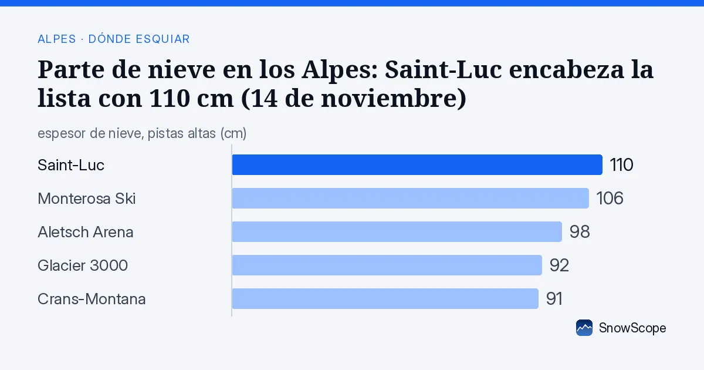
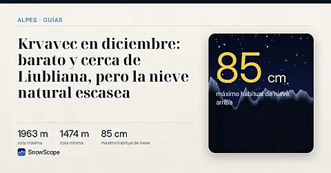
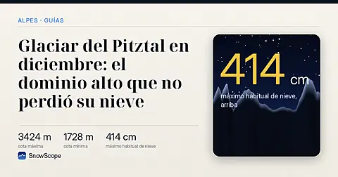
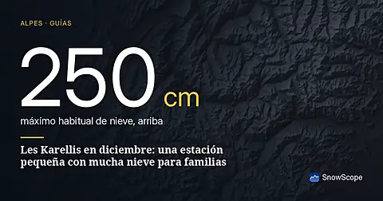
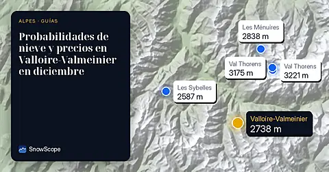
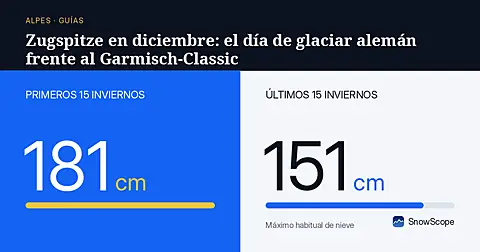
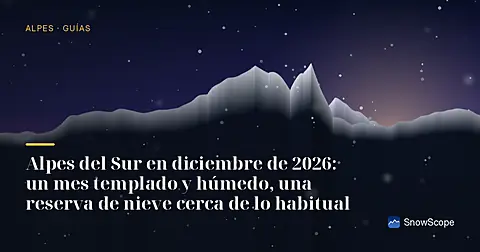
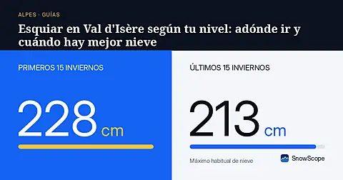
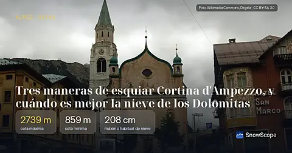
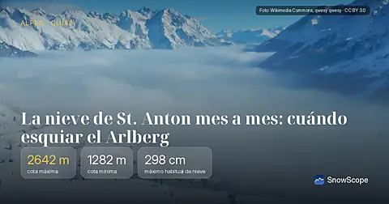

Partes de nieve · Alpes
Alpes: Parte de nieve en los Alpes, 14 de noviembre. Si buscas la mayor cantidad de nieve en los Alpes hoy, mira Saint-Luc (Suiza): unos 110 cm …
La nieve por país hoy
Los países más blancos hoy: Switzerland (72 %), Austria (52 %) y Italy (36 %).
Más nieve nueva en la semana: Slovenia (30 cm), Italy (28 cm) y Austria (22 cm).
La nieve hoy en las grandes estaciones
- La Grave · 169 cm
- Orelle · 157 cm
- Val Thorens · 157 cm
- Val Thorens · 153 cm
- Les Deux Alpes · 128 cm
- Alpe d'Huez Grand Domaine · 122 cm
- Les Grands Montets · 96 cm
- Espace Haute Maurienne Vanoise · 91 cm
- Bonneval-sur-Arc · 87 cm
- Le Grand Domaine · 87 cm
- Les Arcs · 86 cm
- Les Trois Vallées · 84 cm
- La Rosière · 82 cm
- La Thuile ski · 78 cm
- Les Ménuires · 78 cm
- Paradiski · 75 cm
- Courmayeur · 74 cm
- Brévent/Flégère (Chamonix) · 72 cm
- Saint François Longchamp · 71 cm
- Courchevel · 70 cm
- Méribel · 70 cm
- Ovronnaz · 70 cm
- Anzère · 69 cm
- Val Cenis · 69 cm
Parte de nieve en los Alpes: Saint-Luc encabeza la lista con 110 cm (14 de noviembre)

Parte de nieve en los Alpes, 14 de noviembre. Si buscas la mayor cantidad de nieve en los Alpes hoy, mira Saint-Luc (Suiza): unos 110 cm arriba. Después vienen Monterosa Ski (106 cm) y Aletsch Arena (98 cm). Hoy 791 de las 1179 estaciones en los Alpes tienen nieve en las pistas altas; en total, SnowScope cuenta 68.650 km² bajo la nieve. Nieve profunda en una cara norte y suelo pelado en la cara sur de la misma cresta es normal en montañas secas.
La nieve en las pistas hoy
Desde el 12 de noviembre, la nieve pasó de 35.250 km² a 68.650 km² hoy; para el 17 de noviembre, nuestra previsión da 56.290 km².

Forfaits de día en los Alpes desde 36 EUR: nueve estaciones comparadas por precio, kilómetros de pistas y la nieve que suelen tener, para encontrar el mejor día de esquí por tu dinero.

Esquí en glaciar desde 68 EUR al día: hemos comparado siete glaciares de Francia, Austria, Alemania y Suiza por precio y por la nieve que suelen tener en diciembre.

Seis días de esquí desde 191 EUR: hemos clasificado diez semanas de esquí baratas en Europa por precio, y luego hemos revisado 46 inviernos pasados para ver dónde la nieve es fiable.

Desde 20 EUR en un fin de semana de apertura hasta forfaits de 6 días antes de Navidad: un calendario con los chollos más baratos de inicio de temporada en los Alpes para 2026, con la nieve que puedes esperar.

Krvavec a media montaña tiene 13 cm de nieve típica el 15 de diciembre en 46 inviernos, pero terreno desnudo en 11 de ellos. Forfait diario EUR 47.

Esquía 157 km de pistas señalizadas en Serre Chevalier, donde la cima de la montaña tiene un 100 % de probabilidad de nieve a mediados de diciembre.

Turracher Höhe tiene 23 cm a media montaña el 15 de diciembre típico, pero solo el 39% de los inviernos alcanzan 30 cm allí a mediados de diciembre. Datos del 13 de noviembre de 2026.

Hochkar en media montaña tiene 38 cm en un 15 de diciembre típico, y el 63 % de los inviernos tuvieron 30 cm o más en esa semana. Forfaits diarios desde EUR 32,90 en fechas tranquilas.

Diez estaciones de esquí europeas clasificadas por su valor en diciembre, lideradas por Les 2 Alpes con 75 cm de nieve a media montaña.

Orcières Merlette ofrece una base elevada a 1826 m y un pase de 6 días desde 227 EUR, lo que la convierte en una opción fiable para un viaje de esquí en diciembre.

¿Vale la pena Alpe d'Huez para diciembre de 2026? Comprobamos las probabilidades de nieve, el precio inicial de 58,00 EUR y lo comparamos con Les 2 Alpes.

Los forfaits eslovenos son los más baratos (Krvavec 205 EUR por 6 días), pero allí la nieve natural de diciembre escasea; Lachtal, el Hochkar y el glaciar del Möll van mejor.

Lachtal cuesta EUR 62 al día y los niños menores de 7 años esquían gratis. La media montaña tuvo 30 cm o más en el 72 % de los diciembres desde mediados de mes en adelante. Profundidad de nieve el 13 de noviembre de 2026.

Esquía los 131 km de pistas en la Forêt Blanche este diciembre con un pase de seis días por 298 EUR.

En Monterosa Ski el forfait de día online va de 40,00 a 71,00 EUR. En diciembre la nieve está arriba: 124 cm habituales a 3030 m, 6 cm a 1207 m.

El 15 de diciembre en Fellhorn/Kanzelwand: 63 cm en la cima a 1965 m, 30 cm a media montaña, solo 10 cm en la base a 918 m. Planifica en consecuencia.

Planifica tu viaje de diciembre de 2026 a Les Orres comparando los precios de los pases semanales con nuestro historial de nieve de 46 inviernos pasados.

Pitztaler Gletscher mantiene mejor la nieve de diciembre que la mayoría de estaciones de los Alpes: 87 cm a media montaña a mediados de diciembre, con cada invierno reciente por encima de 30 cm. Datos 13 de noviembre de 2026.

Solo Zugspitze y la parte alta de Fellhorn aguantan 30 cm de forma fiable a mediados de diciembre. Las colinas bávaras más bajas ofrecen forfaits más baratos pero muchas menos probabilidades de nieve. Datos del 13 de noviembre de 2026.

Puy-Saint-Vincent combina un forfait de adulto de 1 día por 44 EUR con una buena cantidad de nieve en diciembre en las zonas altas, comparado aquí con su gran vecino Serre Chevalier.

Grimentz-Zinal ofrece 71 km de pistas y nieve fiable en altura para tu viaje de diciembre, con pases de 6 días a CHF 339,00.

Austria antes de Navidad: Galtür 258 EUR y Kühtai 269 EUR por 6 días, con 30 cm en más del 90 % de los inviernos; los glaciares cuestan más, las estaciones pequeñas son una apuesta.

Clasificamos las estaciones de esquí francesas según las probabilidades de nieve en diciembre y los precios de los forfaits, empezando desde 36,00 EUR por un pase diario de adulto en Les Karellis.

La media montaña de Galtür acumula 55 cm en un 15 de diciembre típico. Los forfaits de baja temporada cuestan EUR 55,50 hasta el 18 de diciembre. Datos de 46 inviernos, 1980-81 a 2025-26.

El 15 de diciembre a 3245 m, Hintertux tiene 98 cm de nieve en 46 inviernos de historia. Cada invierno tuvo 30 cm o más en la semana antes de Navidad allá arriba.

Compara las probabilidades de nieve en diciembre y los precios verificados de forfaits desde 40,00 EUR en las estaciones italianas para tu escapada de fin de semana en coche.

La base de Kühtai a 1939 m se mantiene nívea de forma fiable en diciembre. El 15 de diciembre típicamente hay 60 cm en la base, 72 cm a media montaña y 112 cm en la cumbre. El forfait de 6 días de temporada baja cuesta EUR 269 hasta el 18 de diciembre.

Les 2 Alpes llega a los 3511 m para asegurar nieve en diciembre de 2026, con un forfait de adulto de 6 días por 266,50 EUR.

Les Karellis ofrece 45 km de pistas y un forfait de 6 días para adultos por 191,00 EUR, con un 98 % de probabilidad de nieve a media montaña a finales de diciembre.

Esquía en Livigno por 51,50 EUR al día antes del 18 de diciembre, cuando la nieve en la cima alcanza los 30 cm en el 100 % de los inviernos pasados.

Montgenèvre tiene 56 cm de nieve habitual en diciembre en su base, dando a los esquiadores de fin de semana una cobertura más profunda que Sestriere al otro lado de la frontera.

Esquiar en Obertauern en diciembre: 43 cm un 15 de diciembre típico a media montaña y forfait de 6 días a 331 EUR antes de Navidad.

Pila, sobre Aosta, combina un forfait de día a un precio fijo de 60,00 EUR con una nieve de diciembre fiable en sus cotas altas.

Los remontes de Saas-Fee llegan a 3556 m, donde nuestro historial de nieve muestra que el 100 % de los inviernos pasados tienen al menos 30 cm de nieve a mediados de diciembre.

Descubre las tranquilas pistas de St-Luc Chandolin, donde la nieve a media montaña ha alcanzado los 30 cm en el 98 % de los inviernos durante finales de diciembre.

Valloire-Valmeinier ofrece 131 km de pistas y un 98 % de probabilidad de tener 30 cm de nieve a media montaña a mediados de diciembre.

El glaciar de Zugspitze tiene 122 cm de nieve típica el 15 de diciembre a 2627 m; la cima de Garmisch-Classic tiene 57 cm. Mismo precio, diferente cobertura de nieve. Datos de 46 inviernos.

Mölltaler Gletscher en diciembre: 66 cm en el remonte más bajo (2103 m) y 128 cm a media montaña un 15 de diciembre típico; 6 días en temporada baja a 332 EUR.

¿Puede un esquiador principiante y prudente confiar en Courmayeur en diciembre, cuando la media a media altura es de 60 cm de nieve según nuestro historial de inviernos pasados?

Parte de nieve en los Alpes, 14 de noviembre. Si buscas la mayor cantidad de nieve en los Alpes hoy, mira Saint-Luc (Suiza): unos 110 cm arriba. …

Espesor de nieve en St. Anton am Arlberg el 13 de noviembre de 2026: cerca de 1 cm en la cima (2642 m), 5 cm a media montaña, nada en el pueblo. Esta semana 42 cm en la cima y 33 cm a media montaña, lluvia por debajo de unos 1480 m. Cuánta nieve necesitan las pendientes fuertes.

Nevadas en Val Thorens, 13 de noviembre de 2026: 27 cm caídos en la cima (3175 m) y 17 cm a 2498 m en siete días; el espesor de nieve es de 50 cm y 8 cm. Próximos siete días: 86 cm en la cima, 73 cm a 2498 m, cota de nieve muy por debajo del pueblo. La temporada habitual según 46 inviernos.

Parte de nieve de Les Menuires del 13 de noviembre de 2026: 28 cm en la cima (2838 m), nada en el suelo a 2112 m ni a 1386 m. Unos 80 cm esperados en la cima en siete días, cota de nieve hacia 1500 a 1700 m. Por qué Val Thorens, 450 m más arriba en el mismo valle, ya tiene más.

Estado de la nieve en Tignes el 13 de noviembre de 2026: 42 cm en la cima (3447 m), 12 cm a 2503 m, valle sin nieve a 1559 m y 99 cm previstos en la cima en siete días, con lluvia por debajo de unos 1700 m. La comparación con 46 inviernos pasados.


La zona blanca del mapa pasó de 45.820 km² (9 de noviembre) a 38.440 km² hoy, y la previsión dice 46.730 km² el 14 de noviembre. Glacier 3000: +26 cm …

Les Deux Alpes, previsión de nieve frente a la región: 51 cm hasta el 14 de noviembre. La superficie nevada pasó de 45.820 km² el 9 de noviembre a …

En 24 de 46 inviernos, las estaciones de la vertiente italiana y del sur de los Alpes franceses tuvieron un invierno relativamente mejor que la vertiente norte. El gráfico, los grandes años y el tiempo que hubo detrás.

En diciembre, la nieve depende sobre todo de la altura. 46 inviernos pasados en 676 estaciones de los Alpes muestran cuánta nieve esperar el 1, el 15 y el 22 de diciembre, desde menos de 1200 m hasta más de 2400 m.

Un plan barato de 3 días en el lago de Como en diciembre con precios reales 2026-27: trenes, barcos, funicular y esquí en Piani di Bobbio o Madesimo, lo que ahorras frente a Cortina y la probabilidad de nieve en Navidad.

La nieve de hoy en Livigno, lo que dice la previsión estacional europea para diciembre y por qué en Navidad la altitud gana a un mes templado.

La nieve de hoy en Cortina, la previsión estacional europea para diciembre y nuestras probabilidades de una Navidad blanca en el este de los Dolomitas.

Pronóstico de Dolomitas para diciembre de 2026: más cálido por 1,7 °C, ligeramente más húmedo, 30 cm de nieve a fin de año, Navidad blanca a media montaña. Datos del 10 de noviembre.

Diciembre en los Alpes del Sur será más cálido y húmedo de lo habitual, pero la profundidad de nieve a fin de año debería mantenerse cerca de lo normal. Análisis de SnowScope del 11 de noviembre de 2026.

Chamonix comienza diciembre con 27 cm en la cima pero nieve fina más abajo. El calor y la humedad se enfrentan; espera nieve de diciembre casi normal. Datos del 10 de noviembre de 2026.

Zermatt en cifras: dónde dura la nieve, los meses más seguros y cómo llegar al pueblo sin coches, a partir de 46 inviernos pasados.

¿Es Verbier para principiantes? ¿Cuándo es mejor la nieve? ¿Cómo se llega? Respuestas sobre las 4 Vallées y 46 inviernos pasados.

La Sella Ronda desde Sëlva en Val Gardena: puertos de Gardena, Campolongo, Pordoi y Sella en orden, con nuestro histórico de nieve de 46 inviernos pasados.

Val d'Isère y el Espace Killy para principiantes, esquiadores medios y expertos, con la nieve de 46 inviernos pasados a tres alturas.

Kitzbühel es famosa y baja. Lo que dicen 46 inviernos pasados de la nieve a 762 m, 1.377 m y 1.993 m, qué ha cambiado y qué semanas son la apuesta más segura.

Diez puntos prácticos para un viaje de esquí a Livigno: las carreteras, el frío, las tiendas libres de impuestos, las dos laderas y la mejor época de nieve, según 46 inviernos pasados.

Les Arcs tiene cuatro pueblos a diferentes altitudes, cada uno con su propia profundidad de nieve y carácter. Elige el correcto para tu invierno.

De los campesinos walser al Weißer Ring: las fechas que hicieron Lech Zürs y, después, nuestro histórico de nieve antes y ahora, los primeros quince de 46 inviernos pasados frente a los últimos quince.

Qué es verdad de La Grave, la montaña del fuera de pista bajo la Meije: terreno, seguridad, nieve por mes y tendencia, a partir de 46 inviernos.

Siete días en la Silvretta Arena, uno a uno: dónde está la nieve, cuándo pasar a Samnaun y qué dicen 46 inviernos pasados de la nieve de Ischgl a tres alturas.

Saas Fee está a 1 780 m en un pueblo sin coches. Llega en tren a Visp y luego PostBus 511, o conduce por Lötschberg, Furka, Simplon o el valle del Ródano. Datos del 8 de noviembre de 2026.

Alpe d'Huez mira al sol. Cómo planear el día por la hora y la altura, con la nieve de 46 inviernos pasados desde los pueblos bajos hasta el Pic Blanc.

Nuestra serie de 46 inviernos en los Alpes, 108 puntos de 667 a 3872 m: menos días de nieve en todos, claramente en el 81 %. Qué cambió y por qué.

Retrato de Bonneval-sur-Arc en la Alta Maurienne: tejados de piedra, un puerto cerrado, un pequeño dominio y una nieve sorprendentemente gruesa, según 46 inviernos pasados.

Cómo pasar un primer día de esquí en Chamonix, de los Grands Montets sobre Argentière a la hora adecuada para cada ladera, con 46 inviernos de datos de nieve.

Cortina d'Ampezzo de tres maneras: Tofana, Faloria-Cristallo y Cinque Torri-Lagazuoi, con 46 inviernos de datos de nieve a tres alturas.

Chantarella, Marguns, Piz Nair, White Turf: las palabras que se oyen en St. Moritz, explicadas, y lo que 46 inviernos pasados de nuestro histórico de nieve dicen de cada altura de Corviglia.

Davos y Klosters comparten seis montañas de esquí. Un plan día a día, empezando por el Parsenn, con lo que 46 inviernos pasados de nuestro histórico dicen de sus alturas.

Cuándo reservar Courchevel y las 3 Vallées, qué pueblo elegir y dónde dura la nieve, a partir de 46 inviernos pasados.

St. Anton y Ski Arlberg a lo largo del invierno: el espesor de nieve habitual cada mes a tres alturas, a partir de 46 inviernos pasados.

Un año de nieve en Sölden, fase a fase: cuándo blanquean los glaciares, el fin de semana de Copa del Mundo, el centro del invierno y las semanas de primavera, según 46 inviernos pasados a tres alturas.

Tres maneras de pasar un día desde Méribel: al este hacia Courchevel, al sur hacia Val Thorens o en casa en el Mont Vallon, con la nieve de 46 inviernos pasados a tres alturas.